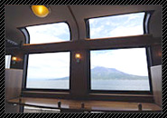

키리시마(霧島)의 절경을 달리는 검은빛의 관광열차 ‘하야토노카제(はやとの風)
푸르름 가득한 키리시마(霧島)를 바라보며 달리는 검은빛의 외관과 금색 앰블럼이 빛나는 우아하고 중후한 분위기의 열차로, 원목으로 제작된 시트좌석은 옛추억 속의 따뜻한 분위기가 넘칩니다. 때묻지 않은 자연과 온천을 간직한 신화의 고장이라고 불리우는 키리시마(霧島)까지 운행됩니다.
운행구간 ： 카고시마추오(鹿児島中央)～하야토(隼人)～요시마츠(吉松)
차내시설

1호차와 2호차 모두 차량 중앙에 전망 좌석이 있습니다. 천정까지 이어진 대 파노라마 차창으로 킨코(錦江)만의 사쿠라지마(桜島) 활화산과 키리시마(霧島)의 산들의 박력 넘치는 풍경이 펼쳐집니다.
■ 차내판매∙그린차량(특실차량) 서비스 안내
특급열차 ‘하야토노카제’에서는 차내판매 서비스가 제공됩니다.